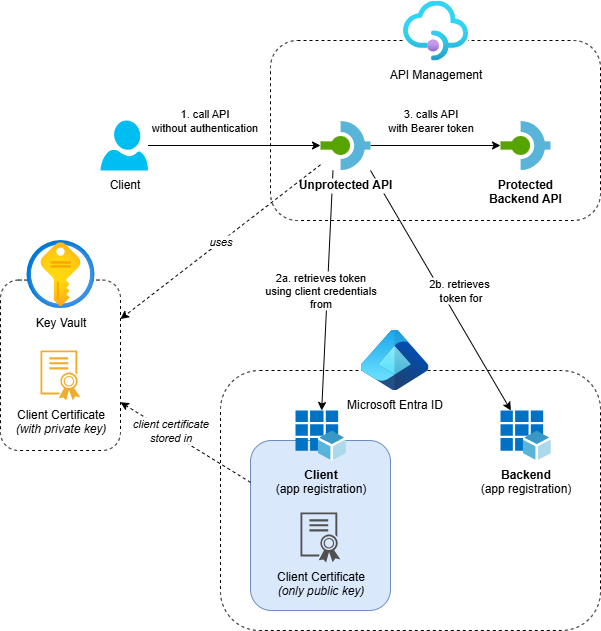
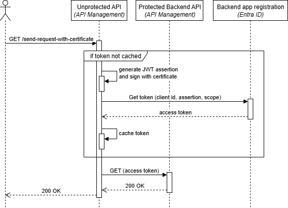

Call OAuth-Protected Backends from API Management using Send-Request Policy with Client Certificate

In my previous post I showed how to call OAuth-protected backends using the send-request policy with client secrets. While client secrets work well, certificates provide stronger security by proving possession of a private key without ever transmitting it.
In this post, I’ll show you how to implement certificate-based OAuth authentication in API Management using the OAuth 2.0 Client Credentials Flow. We’ll use a client certificate to create a JWT assertion, which proves possession of the private key and enables secure access to protected backends.
If you can, use a managed identity to call OAuth-protected APIs from API Management. Have a look at this post for more information.
This post is part of a series about OAuth and API Management:
- Protect APIs in Azure API Management with OAuth
- Calling OAuth-Protected APIs with Managed Identity
- Calling OAuth-Protected Backends from API Management
- Part 1: Using Credential Manager
- Part 2: Using Send-Request Policy with Client Secret
- Part 3: Using Send-Request Policy with Client Certificate - this post
- Calling OAuth-Protected APIs from CI/CD Pipelines using Federated Credentials
Table of Contents
- Solution Overview
- Understanding Certificate-Based Authentication
- Implementation
- Testing the Implementation
- Considerations
- Conclusion
Solution Overview
The solution demonstrates API Management calling OAuth-protected backend APIs using certificate-based authentication with JWT assertions:

- Azure API Management service with two APIs:
- Protected Backend API: A backend API that’s protected with OAuth using Entra ID
- Unprotected API: A public API that calls the protected backend using certificate-based token handling
- Azure Key Vault: Stores the client certificate securely and makes it available to API Management
- Entra ID App Registrations: Separate app registrations for the backend API and the client, with proper role assignments and certificate configuration
- Supporting Resources: Application Insights and Log Analytics workspace for monitoring
The key difference from the client secret approach is that the certificate provides stronger security through public key cryptography instead of shared secrets.
I’ve created an Azure Developer CLI (azd) template called Call API Management backend with OAuth that demonstrates three scenarios: using the credential manager, a send-request policy with client secret and a send-request policy with client certificate. If you want to deploy and try the solution, check out the getting started section for the prerequisites and deployment instructions. This post focuses on calling OAuth-protected backends using the send-request policy with client certificate.
Understanding Certificate-Based Authentication
Before diving into the implementation, it’s important to understand how certificate-based authentication works with Entra ID. The process involves creating a JWT assertion that proves possession of the certificate’s private key without transmitting it. The Microsoft identity platform application authentication certificate credentials documentation provides detailed guidance on creating these JWT assertions, which I’ll explain briefly here.
Here’s what a decoded JWT assertion looks like:
{
"alg": "PS256",
"typ": "JWT",
"x5t#S256": "A1bC2dE3fH4iJ5kL6mN7oP8qR9sT0u"
}
.
{
"aud": "https://login.microsoftonline.com/contoso.onmicrosoft.com/oauth2/v2.0/token",
"exp": 1484593341,
"iss": "aaaabbbb-0000-cccc-1111-dddd2222eeee",
"jti": "00aa00aa-bb11-cc22-dd33-44ee44ee44ee",
"nbf": 1484592741,
"sub": "aaaaaaaa-0000-1111-2222-bbbbbbbbbbbb"
}
.
"A1bC2dE3fH4iJ5kL6mN7oP8qR9sT0u..."
The JWT assertion consists of three parts separated by dots (.):
The header specifies the signing algorithm and certificate information. It uses PS256 for the algorithm (alg), JWT for the token type (typ), and includes the Base64Url-encoded SHA-256 thumbprint of the certificate in the x5t#S256 field, which Entra ID uses to validate the signature.
The claims section contains the authentication information required by Entra ID. The audience (aud) points to Entra ID’s token endpoint, while the issuer (iss) and subject (sub) both contain your client application’s ID. The token includes timing claims like expiration time (exp) and not before time (nbf), with a unique identifier (jti) to prevent replay attacks.
The signature is computed by signing the Base64Url-encoded header and claims (header.claims) with the certificate’s private key using PS256 (RSA with PSS padding and SHA-256). This signature proves possession of the private key without transmitting it, providing the cryptographic security that makes certificate-based authentication stronger than shared secrets.
The JWT assertion can be sent to Entra ID in a form-encoded request like this:
scope={scope}
&client_id={clientId}
&client_assertion={clientAssertion}
&client_assertion_type=urn:ietf:params:oauth:client-assertion-type:jwt-bearer
&grant_type=client_credentials
Where:
scope: The Application ID URI of the backend’s app registrationclientId: The “Application (client) ID” of the client app registrationclientAssertion: The encoded JWT assertion signed with the certificate’s private key
Entra ID will validate the assertion using the public key from the certificate and return an access token if the assertion is valid.
Note that this post focuses on Entra ID. Other Identity Providers may require different JWT header and claims structures. Always consult the specific Identity Provider’s documentation for their JWT assertion requirements.
Implementation
The certificate-based policy implementation builds on the same foundation as the client secret approach but adds JWT assertion creation and certificate signing. Instead of showing the entire policy inline, I’ll walk through the key steps and logic, highlighting the most relevant snippets. For the full working policy, see send-request-with-certificate.xml.
This approach is inspired by the Get OAuth2 access token from AAD using client id and certificate using key vault manage identity.xml example, but uses a different method for certificate retrieval and includes several improvements.
Tip for maintainability: I usually put the logic to retrieve an access token in a policy fragment. This makes the API or operation policy much easier to read and allows you to reuse the token retrieval logic across multiple APIs or operations.
Let me break down the key components of this implementation:
Step 1: Cache Lookup
The policy starts by checking if an access token already exists in the cache using cache-lookup-value:
<cache-lookup-value key="access-token-from-certificate" variable-name="access-token" caching-type="internal" />
This step helps improve performance by avoiding unnecessary token requests to Entra ID when a valid token is already available.
Step 2: JWT Assertion Creation
If no cached token exists, a policy expression creates a JWT assertion signed with the client certificate and stores it in the signed-client-assertion variable. This involves several sub-steps:
Certificate Retrieval
First, we need to retrieve the certificate from API Management’s certificate store using the thumbprint:
var certificate = context.Deployment.Certificates["{{client-certificate-thumbprint}}"];
The certificate is automatically generated in Key Vault and uploaded to the app registration using this script. The unprotected-api.bicep file creates an API Management certificate resource that references the Key Vault certificate, making it accessible to policy expressions through the certificate’s thumbprint.
JWT Header Creation
Next, we create a JWT header with the certificate’s SHA256 thumbprint:
var sha256 = SHA256.Create();
byte[] hash = sha256.ComputeHash(certificate.RawData);
var header = new JObject
{
{ "alg", "PS256" },
{ "typ", "JWT" },
{ "x5t#S256", ConvertBytesToBase64Url(hash) }
};
The x5t#S256 claim contains the SHA256 thumbprint of the certificate, which Entra ID uses to validate the JWT signature.
JWT Claims Creation
After creating the header, we build the JWT claims (payload) with the required fields for Entra ID:
var jwtLifetimeInSeconds = 600; // Ten minutes
var nbf = DateTimeOffset.UtcNow.ToUnixTimeSeconds();
var exp = (DateTimeOffset.UtcNow + TimeSpan.FromSeconds(jwtLifetimeInSeconds)).ToUnixTimeSeconds();
var claims = new JObject
{
{ "aud", "{{oauth-token-url}}" },
{ "exp", exp },
{ "iss", "{{client-id}}" },
{ "jti", Guid.NewGuid().ToString() },
{ "nbf", nbf },
{ "sub", "{{client-id}}" },
{ "iat", nbf }
};
These claims are required by Entra ID for certificate-based authentication and include the token’s audience, expiration time, issuer and unique identifier.
Base64Url Encoding
Both the header and claims objects need to be Base64Url encoded, as the JWT specification requires this format which differs from standard Base64 encoding:
var headerBase64UrlEncoded = ConvertJObjectToBase64Url(header);
var claimsBase64UrlEncoded = ConvertJObjectToBase64Url(claims);
JWT Signing
With both parts encoded, we can now sign the JWT using the certificate’s private key:
// Create the string to be signed: header.payload
var stringToSign = string.Concat(headerBase64UrlEncoded, ".", claimsBase64UrlEncoded);
var bytesToSign = System.Text.Encoding.UTF8.GetBytes(stringToSign);
// Sign the data using the certificate's private key with PSS padding
var rsa = certificate.GetRSAPrivateKey();
var signature = rsa.SignData(bytesToSign, HashAlgorithmName.SHA256, RSASignaturePadding.Pss);
var signatureBase64UrlEncoded = ConvertBytesToBase64Url(signature);
// Return the complete JWT: header.payload.signature
return string.Concat(stringToSign, ".", signatureBase64UrlEncoded);
The signing process uses RSA with PSS padding and SHA256 hashing, which matches the “PS256” algorithm specified in the JWT header. The signature bytes are then Base64Url encoded to create the final part of the assertion.
Helper Methods
Two local functions handle the Base64Url encoding requirements:
string ConvertJObjectToBase64Url(JObject input)
{
var jsonString = input.ToString(Newtonsoft.Json.Formatting.None);
var bytes = System.Text.Encoding.UTF8.GetBytes(jsonString);
return ConvertBytesToBase64Url(bytes);
}
string ConvertBytesToBase64Url(byte[] bytes)
{
// The JWT spec requires Base64Url encoding, which is similar to Base64
// but uses '-' and '_' instead of '+' and '/' and omits padding characters ('=').
return Convert.ToBase64String(bytes)
.Replace("+", "-")
.Replace("/", "_")
.TrimEnd('=');
}
Base64Url encoding uses ‘-’ and ‘_’ instead of ‘+’ and ‘/’ and omits padding characters ('=') to make the encoded string URL-safe.
Step 3: Token Acquisition
The signed JWT assertion is sent to Entra ID using the send-request policy with the Client Credentials Flow:
<send-request mode="new" timeout="20" response-variable-name="get-access-token-response" ignore-error="false">
<set-url>{{oauth-token-url}}</set-url>
<set-method>POST</set-method>
<set-header name="Content-Type" exists-action="override">
<value>application/x-www-form-urlencoded</value>
</set-header>
<set-body>@{
var scope = "{{oauth-scope}}";
var clientId = "{{client-id}}";
var clientAssertion = (string)context.Variables["signed-client-assertion"];
return $"scope={scope}&client_id={clientId}&client_assertion={clientAssertion}&client_assertion_type=urn:ietf:params:oauth:client-assertion-type:jwt-bearer&grant_type=client_credentials";
}</set-body>
</send-request>
The policy uses several named values that are configured in API Management:
oauth-token-url: The OAuth 2.0 token endpoint URLclient-id: The “Application (client) ID” of the client app registrationoauth-scope: The Application ID URI of the backend’s app registration
The client_assertion_type parameter in the body tells Entra ID that we’re using a JWT bearer assertion for authentication.
The ignore-error attribute is set to false so we can perform detailed error handling and tracing.
Step 4: Token Caching
When token retrieval succeeds, the policy extracts the access token and caches it using cache-store-value:
<set-variable name="access-token" value="@(((JObject)context.Variables["get-access-token-response-body"]).Value<string>("access_token"))" />
<set-variable name="access-token-expires-in" value="@(((JObject)context.Variables["get-access-token-response-body"]).Value<int>("expires_in"))" />
<!-- Cache the access token for 95% of its lifetime to prevent expiration issues -->
<cache-store-value key="access-token-from-certificate" value="@((string)context.Variables["access-token"])"
duration="@((int)(0.95 * (int)context.Variables["access-token-expires-in"]))"
caching-type="internal" />
The policy caches the token for 95% of its lifetime to prevent expiration issues during processing.
Step 5: Error Handling and Tracing
Requests made by the send-request policy are not automatically logged in Application Insights. When something goes wrong, we need to log this explicitly using the trace policy:
<trace source="getAccessTokenUsingCertificate" severity="error">
<message>Retrieval of access token failed</message>
<metadata name="ResponseBody" value="@{
// To prevent exceptions, ensure the message is never null or empty by always providing a value.
var body = ((JObject)context.Variables["get-access-token-response-body"])?.ToString();
return !string.IsNullOrWhiteSpace(body) ? body : "<empty>";
}" />
<metadata name="ResponseStatusCode" value="@{
// To prevent exceptions, ensure the status code is never null or empty by always providing a value.
var statusCode = ((IResponse)context.Variables["get-access-token-response"])?.StatusCode.ToString();
return !string.IsNullOrWhiteSpace(statusCode) ? statusCode : "<empty>";
}" />
</trace>
The code includes null checks for both the response body and status code because the trace policy’s metadata values must always have a value. If either is null or an empty string, an exception will be thrown.
When retrieval of the token fails, we return the detailed error response for demo and troubleshooting purposes, which you shouldn’t do in real world scenarios.
Step 6: Authorization Header
Once the token is available (either from cache or newly acquired), the policy adds it to the Authorization header:
<set-header name="Authorization" exists-action="override">
<value>@("Bearer " + (string)context.Variables["access-token"])</value>
</set-header>
Step 7: Cache Invalidation
In the outbound section, the policy handles cache invalidation when the backend returns authentication errors using cache-remove-value:
<choose>
<when condition="@(context.Response.StatusCode == 401 || context.Response.StatusCode == 403)">
<cache-remove-value key="access-token-from-certificate" caching-type="internal" />
</when>
</choose>
This ensures that expired or invalid tokens are removed from the cache, forcing a fresh token acquisition on the next request.
Testing the Implementation
After deploying the solution, you can test the certificate-based OAuth implementation. Here’s a sequence diagram showing the flow:

The flow demonstrates how:
- API Management receives a request on the unprotected API
- The policy checks the cache for an existing access token
- If no cached token exists, the policy creates and signs a JWT assertion using the client certificate
- API Management calls Entra ID directly using the send-request policy with the JWT assertion
- The policy caches the token for subsequent requests
- The request is forwarded to the protected backend with the token
You can test the implementation using the following request. Replace <your-api-management-service-name> with the actual name of your API Management service:
# Operation that will call the protected backend using the send-request policy with a certificate (client_assertion)
GET https://<your-api-management-service-name>.azure-api.net/unprotected/send-request-with-certificate HTTP/1.1
The request should succeed with a 200 OK response, showing that the policy successfully created a JWT assertion, obtained an access token and called the protected backend.
For demonstration purposes, the response includes the JWT token. You shouldn’t return tokens in production environments, as this can expose sensitive information.
An important security indicator in the token is the azpacr claim, which is set to 2, indicating that certificate authentication was used. This differs from client secret authentication, which sets azpacr to 1.
If you execute the request multiple times, you’ll notice that the IssuedAt value doesn’t change initially, showing that the policy caches tokens for improved performance.
Considerations
The same caching considerations from the previous post apply here. The policy implementation explicitly uses caching-type="internal" to ensure tokens are stored in API Management’s built-in cache. According to the Microsoft Caching overview documentation: “By default in caching policies, API Management uses an external cache if configured and falls back to the built-in cache otherwise." If you add an external cache like Azure Cache for Redis, access tokens could potentially be stored there, where users with sufficient permissions might view them. Caching access tokens in an external cache should be a deliberate decision with the security implications carefully considered.
Both certificates and client secrets require lifecycle management, including renewal before expiration, though many people find certificate generation more challenging than working with client secrets. While certificates add complexity in terms of key management and JWT assertion creation, they provide significantly stronger security.
Conclusion
Certificate-based authentication with JWT assertions provides the most secure option of the three approaches we’ve covered for calling OAuth-protected backends from API Management when you can’t use managed identity. The key benefits include:
- Enhanced security: Certificates provide stronger authentication than shared secrets through public key cryptography
- Private key protection: The JWT assertion proves possession of the private key without transmitting it
- Complete control: Full customization of token acquisition, JWT creation and error handling
While this approach requires more implementation effort compared to client secrets or the credential manager, it provides better security for OAuth authentication scenarios. This approach is ideal when security requirements demand certificate-based authentication or when you need complete control over the OAuth token acquisition process.